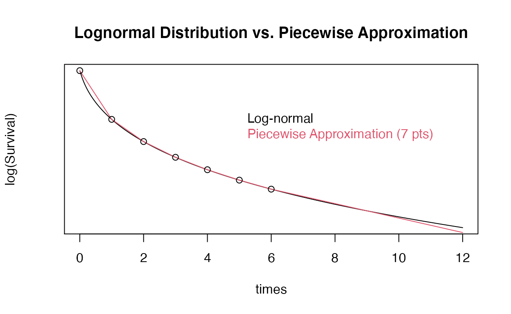
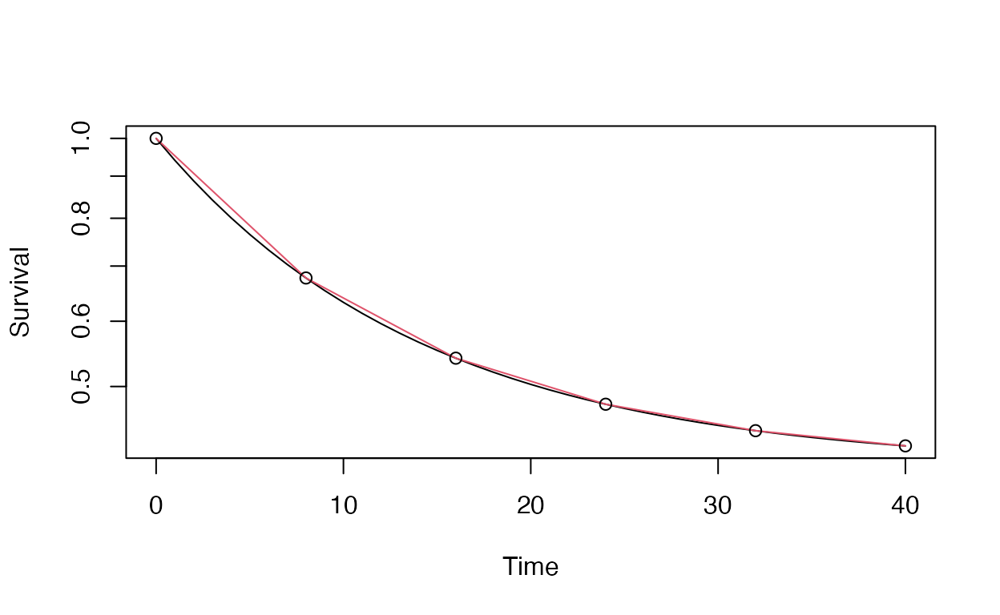

ArbitraryDistribution.RmdWe demonstrate how to approximate arbitrary continuous survival distibutions with piecewise exponential approximations. This enables sample size computations for arbitrary survival models using software designed for the piecewise exponential distribution. Three functions in particular are demonstrated:
We demonstrate ‘s2pwe()’ by approximating the lognormal distribution with piecewise exponential failure rates. Note that when the resulting ‘lnormRates’ is used, the final piecewise exponential ‘duration’ is extended. That is, we have arbitrarily approximated with 6 piecewise exponential rates for a duration of 1 unit of time (say, month) followed by a final rate which extends to infinity.
library(gsDesign2)
lnormRates <- gsDesign2::s2pwe(times = c(1:6,9),
survival = plnorm(c(1:6,9), meanlog=0, sdlog=2, lower.tail=FALSE))
lnormRates## # A tibble: 7 x 2
## duration rate
## <dbl> <dbl>
## 1 1 0.693
## 2 1 0.316
## 3 1 0.224
## 4 1 0.177
## 5 1 0.148
## 6 1 0.128
## 7 3 0.103We compare the resulting approximation to the actual lognormal survival using ‘ppwe()’ to compute survival probabilities \(P\{T>t\}\). For a better approximation, use a larger number of points. We plot with a log scale on the y-axis since the piecewise exponential survival from ‘ppwe()’ is piecewise linear on this scale. We note that at the beginning of each rate period in the approximation the actual survival distribution and its approximation match exactly as indicated by the circles on the graph.
# Use a large number of points to plot lognormal survival
times <- seq(0,12,.025)
plot(times,plnorm(times,meanlog=0,sdlog=2,lower.tail=FALSE),log="y",type="l",
main="Lognormal Distribution vs. Piecewise Approximation",yaxt='n',
ylab="log(Survival)",col=1)
# Now plot the pieceise approximation using the 7-point approximation from above
lines(times, gsDesign2::ppwe(x=times, failRates=lnormRates),col=2)
# Finally, add point markers at the points used in the approximation
points(x=c(0:6),plnorm(c(0:6),meanlog=0,sdlog=2,lower.tail=FALSE),col=1)
text(x=c(5,5),y=c(.5,.4),labels=c("Log-normal","Piecewise Approximation (7 pts)"),col=1:2,pos=4)
We considered the lognormal distribution due to the flexibility it allows for hazard rates over time; see, for example, Wikipedia.
We consider a Poisson mixture model to incorporate a cure model into sample size planning. The form of the survival function for this is
\[S(t)=\exp(-\theta F_0(t))\] for \(t\ge 0\) where \(F_0(t)\) is a continuous cumulative distribution function for a non-negative random variable with \(F_0(0)=0\) and \(F_0(t)\uparrow 1\) as \(t\uparrow \infty\). We note that as \(t\uparrow \infty\), \(S(t)\downarrow \exp(-\theta)=c\) where we will refer to \(c\) as the cure rate. The function ‘pPM()’ assumes \(F_0(t)=1-\exp(-\lambda t)\) is an exponential cumulative distribution function resulting in the survival distribution for \(t\ge 0\):
\[S(t; \theta, \lambda) = \exp(-\theta(1-\exp(-\lambda t))).\] Note that we set the default of ‘lower.tail=FALSE’ so that the survival function computation is the default:
We plot this with \(\lambda = \log(2) / 10\) to make \(F_0(t)\) an exponential distibution with a median of 10. We set \(\theta = -\log(.4)\) to obtain a cure rate of 0.4. we then overlay with the piecewise exponential approximation.
lambda <- log(2) / 10
theta <- -log(.4)
times <- 0:40
plot(times, pPM(times, theta, lambda), type="l", ylab="Survival", xlab="Time", log="y")
# Now compute piecewise expoential approximation
x <- seq(8, 40, 8)
pmRates <- gsDesign2::s2pwe(times = x,
survival =pPM(x, theta = theta, lambda = lambda))
# Now plot the pieceise approximation using the 7-point approximation from above
lines(c(0,x), gsDesign2::ppwe(x=c(0,x), failRates=pmRates),col=2)
points(c(0,x), pPM(c(0,x), theta, lambda))
We note that two different \(\theta\) values provide a proportional hazards model in that the ratio of cumulative hazard function \(H(t; \theta, \lambda) = \theta\exp(-\lambda t)\) is constant:
\[\frac{\log(S(t; \theta_1, \lambda))}{\log(S(t; \theta_2, \lambda))} = \theta_1/\theta_2.\]
For a given \(\theta\) value we can compute \(\lambda\) to provide a survival rate \(c_1 > \exp(-\theta)\) at an arbitrary time \(t_1>0\) by setting:
\[\lambda = -\log\left(\frac{\theta - \log(c_1)}{\theta}\right)/t_1.\]
We compute \(\theta\) and \(\lambda\) values with a cure rate of 0.4 and a survival rate of 0.6 at 30 months:
We confirm the survival at time 30:
pPM(30, theta, lambda)## [1] 0.6